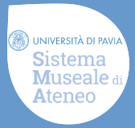
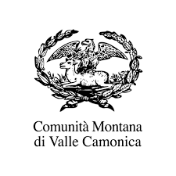
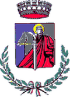
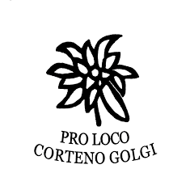
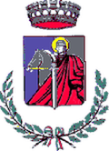
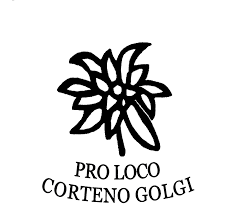
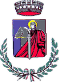
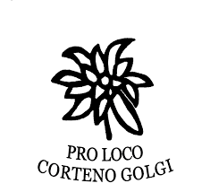
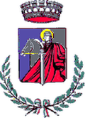
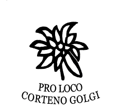

-


 








Il Museo
Il Museo Golgi nasce il 10 giugno 2006 nell’ambito dei festeggiamenti per il centenario dell’assegnazione del Premio Nobel per la medicina all’illustre concittadino.
Read More
Camillo Golgi
Camillo Golgi nasce il 7 luglio 1843 a Corteno. La famiglia è di origini pavesi. Il padre Alessandro si laurea in medicina nel 1838 a Pavia e, poco dopo, accetta il posto di medico condotto a Corteno
Read More
La Valle del Nobel
Il comprensorio montano dell’alta Valle Camonica che confina con la Valtellina, rappresenta un’area particolarmente ricca di attrazioni per un turismo ecosostenibile, culturale e sportivo..
Read More
Sentiero Golgi
Il progetto promuove la montagna come palestra naturale e fonte di salute e con tale spirito questo percorso è dedicato al Nobel nato tra i monti dal Comune di Corteno Golgi e agli enti che lo hanno sostenuto.
Read More